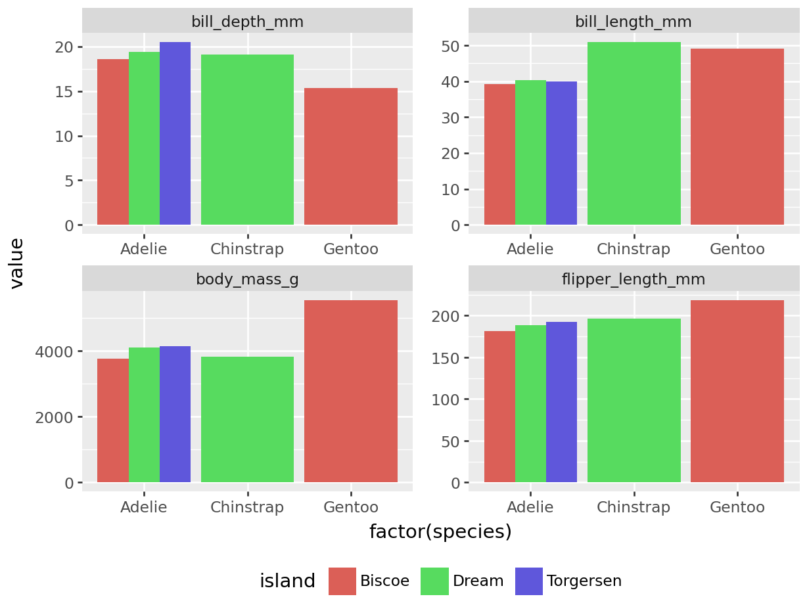

Code
import pandas as pd
import numpy as np
import plotnine as pn
from matplotlib import rcParams
from IPython.display import display, Markdown
from great_tables import GT
import plotly.express as px
from palmerpenguins import load_penguins
I wanted to make a quick post about looping through a parameterized report using Quarto and Python because I could not find much information on this topic using Python. When I was creating this, I came across a wonderful video explaining a more in-depth example of looping through a couple of parameters for Quarto documents in Python (video here, Quarto document code here, for loop code here).
import pandas as pd
import numpy as np
import plotnine as pn
from matplotlib import rcParams
from IPython.display import display, Markdown
from great_tables import GT
import plotly.express as px
from palmerpenguins import load_penguinsIn order to prepare a Quarto document to have parameters for individual reports, we need to include a tags evaluation option as #| tags: [parameters]. I have set up my year parameter for 2007. I usually run the parameterized report to make sure that the report renders correctly. When everything works like it should, I move forward with the for loop to render multiple reports.
year = 2007Below I am doing some basic calculations to have for a visualization and a great tables output table. To render reports based on the year’s data, I filtered the data as penguin so it stratified the plot and table for each year within each parameterized report.
year
2009 120
2008 114
2007 110
Name: count, dtype: int64
| species | island | sex | bill_length_mm | bill_depth_mm | flipper_length_mm | body_mass_g |
|---|---|---|---|---|---|---|
| Adelie | Biscoe | female | 37.48 | 18.58 | 181.8 | 3470.0 |
| Adelie | Biscoe | male | 39.16 | 18.3 | 181.6 | 3770.0 |
| Adelie | Dream | female | 37.86 | 17.84 | 185.0 | 3269.44 |
| Adelie | Dream | male | 40.38 | 19.43 | 188.6 | 4102.5 |
| Adelie | Torgersen | female | 38.28 | 18.16 | 187.62 | 3475.0 |
| Adelie | Torgersen | male | 39.9 | 20.49 | 192.29 | 4139.29 |
| Chinstrap | Dream | female | 46.57 | 17.84 | 188.69 | 3569.23 |
| Chinstrap | Dream | male | 50.88 | 19.13 | 196.15 | 3819.23 |
| Gentoo | Biscoe | female | 45.06 | 13.99 | 211.06 | 4618.75 |
| Gentoo | Biscoe | male | 49.0 | 15.36 | 218.88 | 5552.94 |
To render the report above, we are going to create a python file (.py) to house our for loop for the reports. Rather than link to an additional file, I have the code below of what would be on the .py file. The only package we’ll need is the os package. Since this is a simple example, I’m going to loop through one parameter (year) and since I already went through the palmerpenguins dataset, I know there are three years of data. For this example, I hard coded the years into a list to loop through, but I could have also used unique() functions from pandas or numpy to get the unique values for the years, which would be more beneficial if the data would be updated in the future.
The for loop then calls for each value in the year_list list. I also included the year in the final html file to make it easier to distinguish which report belongs to what data. Then I like to organize the command argument into the separate components of the quarto command with the name of the parameterized report template first followed by the parameter I’m looping over and then the output file name. This should render three reports, one for each year, with the first name being penguin_report_2007.html.
import os
# Define the list of states
# np.unique(penguins['year'])
# penguins['year'].unique()
year_list = [2007, 2008, 2009]
# Loop through each state and render the Quarto document
for i in year_list:
output_file = f'penguin_report_{i}.html'
command = (
f'quarto render index.qmd '
f'-P year:"{i}" '
f'--output "{output_file}"'
)
os.system(command)